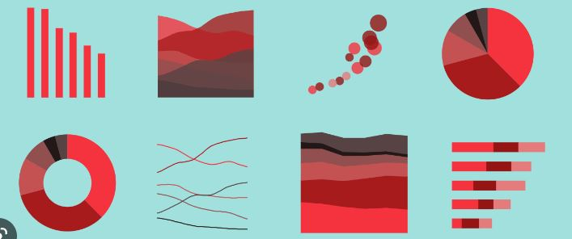

Covid-19:
Data Cleaning and Exploration
Covid-19 and Lockdown was a difficult time for everybody all over the world. But now that the pandemic
is finally over, I thought let's analyze the data and gain insights on how it effected various countires
continents.
In this project we clean the inconsistencies in data, and run various queries to gain information, using
Microsoft SQL Server.
Football Database:
Analysis for a Decade
Ever since I was a kid, I have always been passionate about Football. So as my first SQL project,
I chose to make a small database with data for UEFA Champions League and LaLiga Santander for the period
of 2010-2019. I used MySQL for this project.
Anime Database:
Data Exploration and Insights
As for my second project, I was looking for a large dataset to perform analysis. I really love watching Anime,
and I have watched a lot of shows. But even then, there are like hundreds of shows that I haven't watched. So I
downdloaded a dataset from Kaggle with more than 17,000 rows. I used Microsoft SQL Server to run my queries and gain information
from the dataset.
Movie Analysis:
Data Cleaning And Correlation Using Python

Who doesn't love watching movies? But ever wonder, what defines a movie as successfull? The answer is:
Gross Earning. In this project I first cleaned the data to remove any inconsistencies and then used
Correlation to find out what effects the Gross Earning the most.
Covid-19:
Data Visualization using Tableau

Exploring the data in Microsoft SQL Server was insightful. But the dataset was very large and it was
not feasible to view all the important queries together. So using the insights what we got from the previous
project, I have built a Tableau Dashboard which gives a nice Visual Representation of the data which is also easy
to understand.